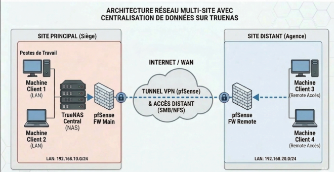

Ce schéma présente une architecture réseau multi-site sécurisée, conçue pour centraliser les données d'une entreprise au sein de son siège (Site Principal) tout en permettant un accès distant transparent et protégé à une agence (Site Distant). L'infrastructure repose sur la mise en place d'un tunnel VPN Site-à-Site chiffré, établi via l'Internet public entre deux pare-feux pfSense (pfSense FW Main au siège et pfSense FW Remote à l'agence). Ce tunnel sécurise l'intégralité du trafic inter-site. Au coeur du dispositif, au siège, un serveur TrueNAS Central héberge toutes les données de l'entreprise sur un stockage utilisant le système de fichiers ZFS, garantissant leur intégrité et leur centralisation. Les postes de travail du LAN local du siège (192.168.10.0/24) y accèdent directement via le pare-feu FW Main. Simultanément, les utilisateurs de l'agence, situés sur un LAN distinct (192.168.20.0/24), accèdent à ces mêmes ressources centralisées de manière totalement sécurisée à travers le tunnel VPN, en utilisant des protocoles de partage de fichiers standard tels que SMB ou NFS. Cette solution répond efficacement aux enjeux de sécurité et de collaboration inter-sites, tout en simplifiant la gestion globale du patrimoine de données de l'organisation.